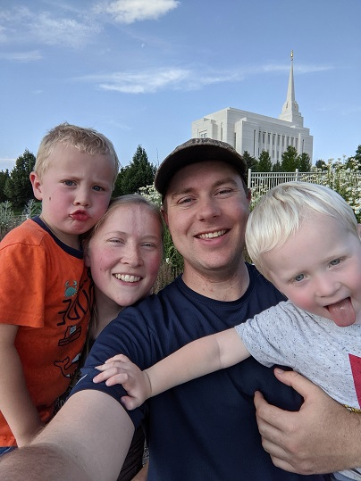

About Me
Logan Bradford
Hello everyone, My name is Logan Bradford, I am from Blanding, Utah, a small town in the four corners area. I have been married for nearly seven years, and I have 2 boys, ages 5 and 3. Currently I live in Rexburg, Idaho and I am a CIT major. I enjoy building computers, playing games, and fishing with my spare time. I also enjoy being a father, and find great satisfaction in watching my sons learn, grow, and develop their own personalities. I have been a member of the Church my whole life, but my conversion started when I was 14 years old. At the time I was rebelling, and I decided to take Moroni's promise and prove him wrong. When I got to Alma chapter 5:14-22, I imagined myself in that circumstance, and I had a profound feeling of God's love and wanting to be part of the group from verse 16. I have been to multiple universities before BYUI, 2 community colleges, Utah State University, and Colorado State University, and BYUI is by far my favorite. I have felt that my teachers cared for me, and the cost was very affordable, especially for the quality of education.
I was originally a Civil Engineering Major in my senior year, but after working in a structural engineering firm, doing inspections or foundations and writing letters, I realized that wasn't the path for me. I have worked as a dishwasher and cook in a steakhouse, as well as a cook at an independent living center for seniors. I have also worked at Magpul, building gun magazines for glocks, AR-15s, and AK's. I am mostly taking this class for the requirement, but I do like understanding how webpages work.